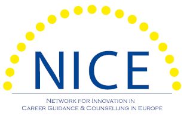
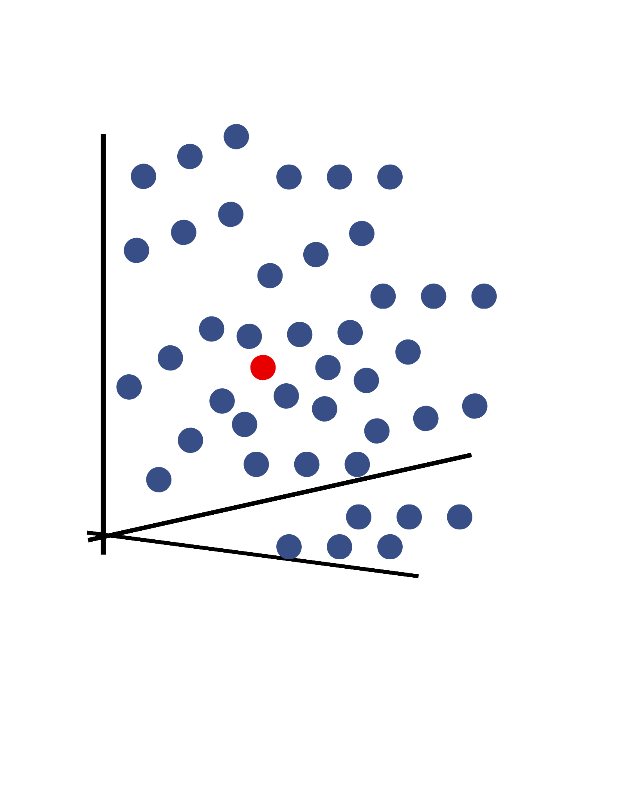

Bridging the Skills Gap through NLP:
A Pilot Study on Inclusive Career Match in the Greek Labor Market

Athens
16-19/09/2026
Chrysanthi Georganta, Ph.D. Cand.
Public Employment Services of Greece (DYPA);
National and Kapodistrian University of Athens
georgant@uoa.gr
Greek Labour Market
Employers
Candidates do not meet the qualifications or skills
Are looking for their careers abroad
- knowledge
- money
- time
+ unemployment
Can we break this vicious circle?
NLP
(Mehta N., Devarakonda M.V., 2018 · García, Núñez-Valdez et. al., 2018)
a branch of Artificial Intelligence that enables a computer to understand human words in the same way that humans do.
a well-trained model is capable of understanding words that are similar.
"office software"
creating or editing documents, spreadsheets, and presentations
Pilot Study
15.000CVs
50 Job Ads
Greek PES (DYPA) / Random Sample
Data || CVs
- work experience
- education
- training
- skills
- work preferences
- excluding age and gender
Method
Removed:
stopwords (I, he, the etc)
links
numbers
punctuation
all letters to lowercase
CV Space
Trained Model:
Word 2 Vec technique
dimensions = 100
generate a CV space
Manhattan Distance
Data || Job Ads
- specialty
- job description
- qualifications
- other details

Manhattan Distance
Does it Work?
Similar Words
Matching
Similar Words
hairdresser ~ care, hair, ...
κομμωτής ~ περιποιηση, κόμη, ...
data scientist ~ Python, JAVA
Matching
secretary
⬇
CVs of secretary, office stuff, typist, filers, business administration
Why is it different?
training exclusively on professional qualifications - no historical hiring data
decouple skills from socio-demographic prejudices
promotes inclusive guidance
evaluation solely on their professional potential
Limitations
- lack of lemmatizer / stemmer,
- further testing needed,
- cross validation with career counsellors as third party reviewers
Implementation
updating curriculum identifying skill gaps suggesting career paths supporting career change.
Conclusion
AI-driven tools can enhance the efficiency of career counselling:
career developement with social justice human-centric technological integration.
Thank You!
Technology is a tool.
Let's learn how to use it & how it works,
to use it properly.